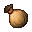
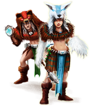
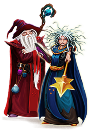
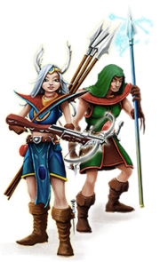
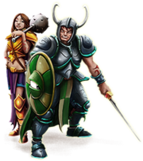

Selecione a vocação no qual seu char esta para carregar detalhes sobre ela.
INFORMAÇÕES DO CHAR
Experiência:
000
Hitpoints:
000
Manapoints:
000

CAP:
000
Velocidade:
000
CÁLCULO DE USO DE MANA
0 Segundos
- FECHAR -
CÁLCULO DE EXPERIÊNCIA
Faltam X de Experiência para o próximo Level.
Totalizando X de Experiência.
0 Segundos
- FECHAR -
Druids
Mago de Suporte e Cura

Descrição
O Druid é devotado e relacionado com a natureza, de onde provém toda a sua força.
Ele pratica o controle sobre elementos da natureza para o benefício de todos os humanos.
Druids conhecem a arte da cura, e possuem mais magias curativas do que qualquer outra vocação.
O Druid causa danos mágicos. Além de rods, ele pode usar elementos como Gelo ou Terra, por exemplo.
O Druid é capaz de summonar até duas criaturas para lutarem ao seu lado e sua velocidade são proporcionais à velocidade do Druid.
Além de ser a única vocação com grande variedade de runas de cura.
O equipamento de um Druid é considerado leve, além dos mantos ou capas no lugar de armaduras e spellbooks para sua proteção,
ele também faz uso de rods.
Vantagens
Mais rápida progressão em Magic Level (mesmo que os Sorcerers);
Rápida regeneração de Mana (mesma que os Sorcerers);
Maior quantidade de Mana (mesmo que os Sorcerers);
Pode fazer muitos tipos diferentes de runas e algumas exclusivas de cura;
É a única vocação capaz de fazer runas e magias do tipo Ice que são muito úteis contra Dragons e outros monstros fracos contra gelo e que são muito caçados;
São muito requisitados para caçadas com blockers, devido ao seu poder de cura e ataque;
Única vocação capaz de usar magias para curar seus companheiros em uma batalha;
Podem usar duas criaturas sumonadas para ajudar em caçadas. (igual aos Sorcerers);
Desvantagens
Hitpoints regeneram lentamente (como os Sorcerers);
Baixa quantidade de Hitpoints (como os Sorcerers);
Menor Capacidade para carregar itens (igual aos Sorcerers);
Habilidades de defesa e ataque corpo-a-corpo sobem lentamente (como os Sorcerers);
Magias ofensivas custam mais para Druids do que para Sorcerers;
Não possuem tanta variedade de armaduras (igual aos Sorcerers);
Um de seus elementos, earth, é dificilmente usado, devido a maioria das criaturas serem imunes ao elemento.
Sorcerer
Mago de Ataques Massivos

Descrição
Um Sorcerer, mestre arcano das artes negras, dedica sua vida ao estudo da magia.
Ele é profundamente convicto que superioridade encontra-se na sabedoria e não na força física.
Sorcerer causa dano mágico e, assim como o Druid, ele é capaz de controlar elementos, neste caso o Fogo e a Eletricidade.
Usando seu conhecimento nas artes destrutivas o Sorcerer é o único capaz de criar as poderosas runas de Sudden Death.
Também é capaz de atacar múltiplos inimigos de uma vez como nenhuma outra vocação.
O equipamento de um Sorcerer é classificado como leve, geralmente são usadas wands, mantos ou capas ao invés
de armaduras pesadas e spellbooks no lugar de escudos.
Vantagens
Mais rápida progressão em Magic Level (mesmo que os Druids);
Rápida regeneração de Mana (mesma que os Druids);
Maior quantidade de Mana (mesmo que os Druids);
Pode fazer muitos tipos diferentes de runas;
Pode usar todos os diferentes tipos de runas, exceto as runas de Paralyze, Holy Missile e Wild Growth;
Pode fazer runas de Sudden Death;
Pode usar fortes Magias de Ataque dos tipos fire e energy;
Pode entrar na sala depois do NPC Muriel, em Thais;
Melhor PvP devido a sua grande capacidade de fazer magias destrutivas e cura rápida (igual os Druids);
Master Sorcerers podem encantar itens com os elementos Energy e Fire;
Podem usar duas criaturas sumonadas para ajudar em caçadas. (igual aos Druids);
Energy Wave e Rage of the Skies fazem mais dano e custam menos mana que a Terra Wave e Wrath of Nature (magias de Druid), fazendo delas 50% melhor dano por mana.
Desvantagens
Hitpoints regeneram lentamente (como os Druids);
Baixa quantidade de Hitpoints (como os Druids);
Habilidades de defesa e ataque corpo-a-corpo sobem lentamente;
Baixa quantidade de capacidade (como os Druids);
Não podem fazer runas de cura;
Sem magias de cura adicionais para suporte (como por exemplo Heal Friend, Mass Healing, etc.)
Paladin
Guerreiro / Arqueiro Sagrado

Descrição
O Paladin, um arqueiro sagrado, rápido e infalível, ataca mortalmente seus inimigos à distância com tal velocidade que ele parece ser invisível para seus alvos.
Paladin causa dano físico, mas também domina o dano sagrado, devido a sua força espiritual, e usa algumas magias desse gênero para derrotar rapidamente seus oponentes.
Seu potencial mágico é tão equilibrado quanto sua resistência física.
Em batalha, um Paladin procura manter seus adversários o mais longe possível para usar sua vantagem de ser um lutador de distância.
Ele precisa estar em movimento o tempo todo para evitar se tornar um alvo.
E mesmo que não consiga correr e usar suas técnicas à distância, ainda pode mudar para a luta corpo-a-corpo, mas sem alcançar o nível de um knight.
Para uma luta bem sucedida, ele pode adicionar alguns ataques de suporte como Sharpshooter ou Swift Foot.
O equipamento de um Paladin consiste em armas à distância, como bows, crossbows, spears entre outras, também escudo, armadura e
armas corpo-a-corpo (espadas, machados e martelos) de uma mão. Paladins podem usar a Assassin Star, uma das armas mais poderosas do Tibia.
Vantagens
Avança sua habilidade de combate à distância mais rapidamente do que qualquer outra vocação. (Mais rápido que um Knight avança em combate corpo-a-corpo);
Avança rapidamente em habilidades de defesa, na mesma velocidade do Knight e mais rápido que os Mages;
Pode avançar em habilidade de combate corpo-a-corpo a uma velocidade razoável e mais rápido que os mages;
Avança a uma velocidade razoável em magic level, podendo fazer e/ou usar algumas runas úteis;
Única vocação com habilidade sagrada, o que confere ao Paladin runas e magias exclusivas;
Pode usar Sets fortes e pesados;
Pode caçar criaturas fortes mesmo em level baixo, adquirindo assim, mais pontos de experiência;
É a vocação mais equilibrada e, considerada por muitos, a mais poderosa de Tibia.
Desvantagens
Regeneração de hitpoints mais lenta que a dos Knights;
Regeneração de Mana mais lenta que a dos Mages;
Não podem fazer runas poderosas como os Mages;
Seu dano em área é inferior comparado ao das outras vocações;
O treinamento é difícil, pois suas armas de treino (spears, small stones, etc.) quebram após determinado tempo de uso, sendo assim necessário reabastecer o armamento frequentemente;
Arcos e bestas são armas de duas mãos sem nenhuma defesa, um Paladin pode receber pesados danos quando encurralados por seus oponentes;
O combate à distância não é apropriado para espaços pequenos, então é necessário que um Paladin se adapte a outros modos de combate (corpo-a-corpo ou magias, por exemplo);
Em leveis menores, por ausência de capacidade, não podem caçar continuamente. Precisam fazer frequentes visitas à cidade para adquirir mais munição.
A capacidade pode fica limitada a carregar armamentos/munição, restando pouco para os loots das criaturas, pois ao mesmo tempo em que a caça é realizada, vai-se liberando capacidade automaticamente.
Knight
Guerreiro Implacável

Descrição
Um Knight é um guerreiro forte e sempre pronto para uma batalha.
Em combate em grupo, o Knight se posiciona sempre na linha de frente para proteger os demais jogadores.
Ele é aquele que leva os maiores hits e não se rende ao ser cercado por muitos inimigos.
Assim, as vantagens do knight são um forte escudo e armas.
O Knight causa Dano Físico, mas ele também pode fazer um tipo secundário de dano usando armas mágicas encantadas, por exemplo.
Devido à sua força e usando certas táticas, um Knight é capaz de matar criaturas muito fortes.
Com base em sua natureza, ele é capaz de usar algumas magias.
Como rage para aumentar seu dano ou protector para aumentar sua defesa por um determinado período de tempo.
Ainda assim, o Knight não deve se tornar um usuário de magias.
O equipamento de um Knight é classificado como pesado, e portanto, apenas utilizável por ele,
pois ele seria o único com força suficiente para usar essas armaduras e armas.
Sua força bruta lhe dá maior capacidade para carregar equipamentos e itens em relação as outras vocações.
Vantagens
Avança mais rapidamente em habilidades de combate corpo-a-corpo (sword, axe, club e fist) do que qualquer outra vocação;
Avança rapidamente em habilidades de defesa, na mesma velocidade dos Paladins e mais rápido que os Mages;
Avança em combate à distância a uma velocidade razoável (melhor do que Mages);
Possui a melhor capacidade de todas as vocações;
Recebe mais pontos de vida, a cada level, do que qualquer outra vocação;
Possui regeneração rápida de vida;
É a vocação mais fácil de se dominar as técnicas;
Em leveis mais elevados um knight se torna um verdadeiro tanque de guerra, podendo facilmente blockar várias criaturas.
Desvantagens
Possui regeneração lenta de mana;
Avança em magic level a uma velocidade extremamente lenta;
Possui uma menor quantidade de mana, em relação a outras vocações;
Usa pouca variedade de runas devido ao baixo magic level;
Aprende poucas magias e não pode fazer runas;
Depende de bons equipamentos;
Precisa escolher uma classe de arma (espada, machado ou martelo), e será perdido muito tempo se quiser trocar a classe mais tarde;
Necessita sempre encarar de frente as criaturas e oponentes, recebendo assim, pesados danos continuamente;